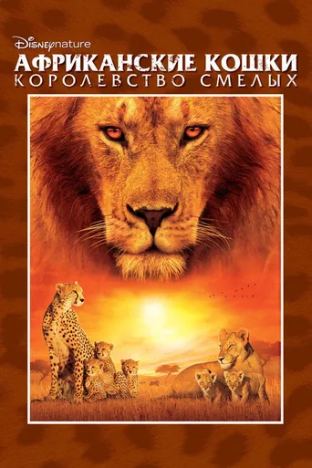

Африканские кошки: Королевство смелых 2011
Станьте свидетелем невероятных приключений двух семей, стремящихся сделать своим домом одно из самых опасных мест на Земле. Вы столкнётесь лицом к лицу с этими величественными царями саванны и их настоящей жзнью, любовью и решимостью.
Открыть в каталогеДанные и постеры принадлежат их правообладателям. Этот продукт использует TMDB API, но не одобрен и не сертифицирован TMDB.